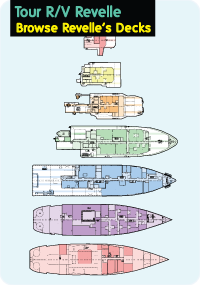
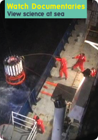
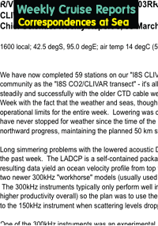

|  |  |  |
ABOUT VIRTUAL EXPLORER
This material is based upon work supported by the National Science Foundation under Grant No. OCE-0752970 and OCE-0223869. Any opinions, findings, and conclusions or recommendations expressed in this material are those of the author(s) and do not necessarily reflect the views of the National Science Foundation.